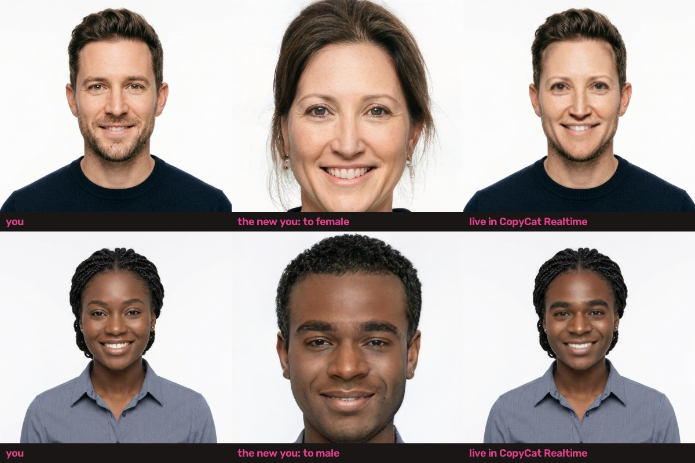
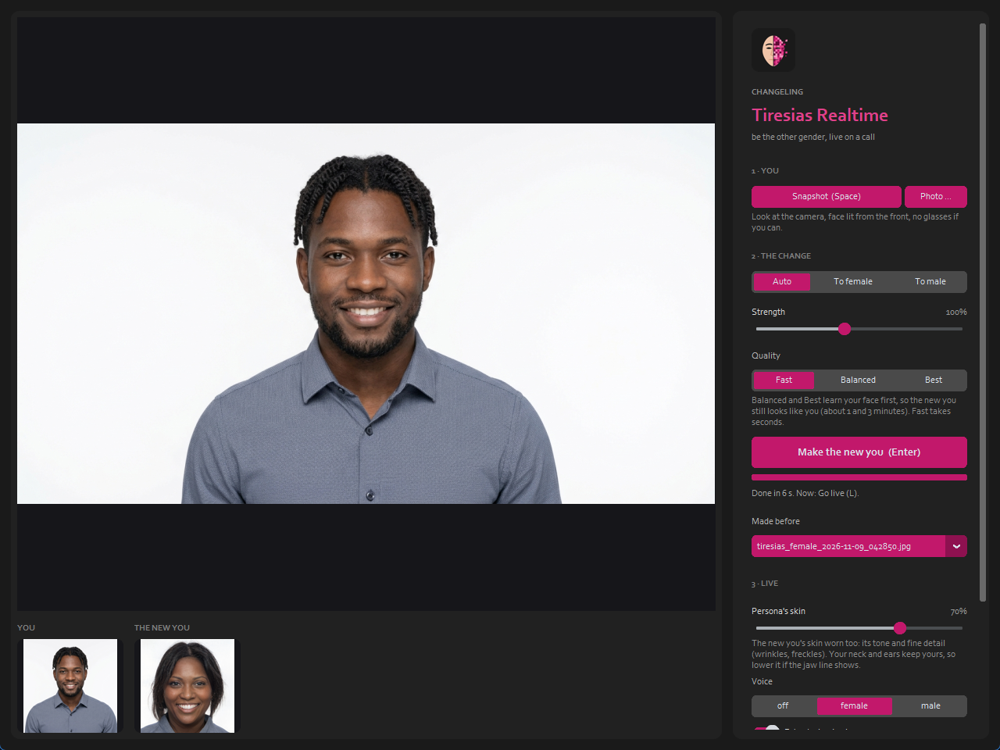
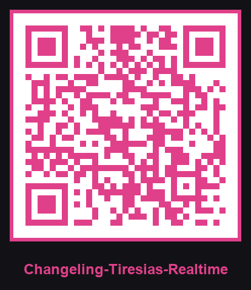

What it looks like
You, the new you that Changeling Tiresias makes from one snapshot, and Changeling Imago Realtime wearing it live. Every face is an AI-generated person who doesn't exist. Click to enlarge.

Use it
- Python 3.9 - 3.12, an NVIDIA GPU (4 GB is enough), a webcam; OBS for its Virtual Camera.
- Start
run.bat(orrun.ps1,run.sh). It fetches Changeling Tiresias and Changeling Imago Realtime next to it if they're missing. - Snapshot (or a photo), choose the change, Make the new you, then Go live.

Why a snapshot
StyleGAN editing learns a face for about a minute: far too slow for every frame of a call. So Changeling Tiresias makes the new you once, and Changeling Imago Realtime wears it at camera speed, following your expressions.
This page on your phone
